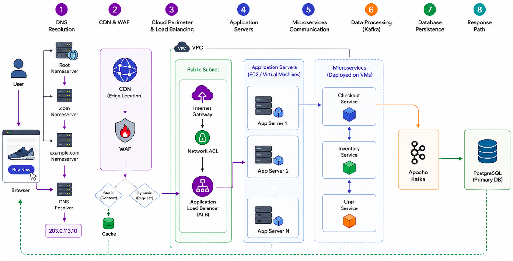
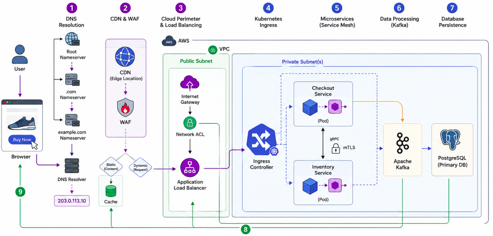

Part 5: Data Infrastructure & Observability¶
This final section brings everything together. We look at networking for massive data systems, how to monitor complex networks, and trace a single request through the entire stack.
MODULE 15: DATA ENGINEERING INFRASTRUCTURE¶
Data platforms move petabytes of data, requiring incredibly robust underlying networks.
End-to-End Data Platform Architecture¶
Modern data architectures consist of several stages:
- Ingestion: Moving raw data into the system (e.g., IoT sensors sending telemetry, databases streaming change logs).
- Storage: Storing massive volumes of data cheaply (Data Lakes).
- Processing: Transforming the data (Batch or Stream processing).
- Serving: Querying the data for analytics (Data Warehouses).
Key Data Technologies and Networking Considerations¶
-
Apache Kafka: A distributed event streaming platform.
-
Networking aspect: Kafka brokers communicate heavily with each other to replicate data partitions. Requires extremely low-latency, high-bandwidth internal networks.
-
Apache Spark: A unified analytics engine for large-scale data processing.
-
Networking aspect: Spark workers constantly shuffle data across the network during complex queries. If the network is slow, the query takes hours instead of minutes.
-
Data Lakes (e.g., AWS S3): Vast object storage for unstructured data.
-
Networking aspect: Accessing S3 from within a VPC shouldn't go over the public internet. We use VPC Endpoints to route traffic directly over the cloud provider's internal backbone, saving massive amounts of money on data egress fees.
-
Data Warehouses (e.g., Snowflake, BigQuery): Highly structured databases for analytics.
Module 15 Key Takeaways: Data platforms put immense strain on East-West network traffic. Optimizing network paths (like using VPC endpoints) is a critical skill for Data Engineers to reduce costs and improve query speeds.
MODULE 16: OBSERVABILITY AND MONITORING¶
You cannot fix what you cannot see. Observability is the practice of instrumenting systems to gather actionable data about their behavior.
The Three Pillars of Observability¶
- Metrics: Numerical data measured over time (e.g., "CPU is at 80%", "Network bandwidth is 5Gbps").
- Logs: Immutable records of discrete events (e.g., "User Admin logged in at 12:01 PM from IP 192.168.1.5").
- Traces: A representation of a single user's journey through an entire distributed system, showing exactly how long the request spent in each microservice.
Essential Observability Tools¶
- Prometheus: An open-source systems monitoring and alerting toolkit. It "scrapes" metrics from your infrastructure and stores them in a time-series database.
- Grafana: A visualization tool that connects to Prometheus (and other sources) to create beautiful, real-time dashboards.
- ELK Stack (Elasticsearch, Logstash, Kibana): The industry standard for centralized logging. It collects logs from thousands of servers, makes them searchable, and visualizes the data.
- OpenTelemetry: A standardized framework for generating and capturing metrics, logs, and traces.
Network Monitoring Strategies¶
Network monitoring specifically looks for:
- Packet loss and latency spikes.
- Unusual traffic patterns (which could indicate a DDoS attack or data exfiltration).
- BGP route flapping.
- DNS query failures.
Module 16 Key Takeaways: In a cloud-native world with ephemeral containers, traditional monitoring fails. You must rely on distributed tracing, centralized logging, and robust metrics to troubleshoot issues.
MODULE 17: COMPLETE END-TO-END REQUEST FLOW¶
Let's put all 16 modules together. What exactly happens when a user opens an app, clicks a button, and buys a product?
The Scenario: A User buys a shoe on shop.example.com¶
Without Kubernetes¶

With Kubernetes¶

1. DNS Resolution:¶
- The user's browser queries the local DNS resolver. It recursively asks the Root,
.com, andexample.comAuthoritative Nameservers. - DNS returns an IP address:
203.0.113.10(which is the public IP of our CDN/WAF).
2. CDN & WAF (Web Application Firewall):¶
- The user establishes a TCP connection and TLS handshake with the CDN edge server closest to them.
- The WAF inspects the HTTP request to ensure it's not a SQL Injection or Cross-Site Scripting attack.
- If the request is for a static image of the shoe, the CDN serves it from cache immediately.
- Since this is a dynamic "Purchase" request, the CDN forwards the traffic to the Cloud Load Balancer.
3. Cloud Perimeter & Load Balancing:¶
- Traffic hits the Internet Gateway (IGW) of the AWS VPC.
- The Network ACL on the Public Subnet allows the traffic.
- Traffic reaches the Application Load Balancer (ALB).
- The ALB terminates the TLS connection, inspects the HTTP headers, and determines it needs to go to the Kubernetes cluster.
4. Kubernetes Ingress:¶
- The ALB forwards the traffic to the Kubernetes Ingress Controller (running on Worker Nodes in a Private Subnet).
- The Ingress Controller looks at the URL path (
/purchase) and routes it to the internalCheckout Service.
5. Microservices (Service Mesh):¶
- The traffic enters the Service Mesh proxy sidecar of the Checkout Pod.
- The Checkout Service needs to verify inventory. It makes an internal gRPC call to the
Inventory Service. The Service Mesh handles internal DNS resolution, encrypts the traffic (mTLS), and routes it to an available Inventory Pod.
6. Data Processing (Kafka):¶
- The Inventory Service confirms stock. The Checkout Service completes the transaction.
- The Checkout Service publishes an event:
"Order Placed: Order #12345"to an internal Apache Kafka cluster.
7. Database Persistence:¶
- The Checkout Service also commits the final transaction to the primary relational database (e.g., PostgreSQL).
8. Response:¶
- An HTTP
200 OKresponse travels back through the Service Mesh proxy $\rightarrow$ Ingress Controller $\rightarrow$ Application Load Balancer $\rightarrow$ CDN $\rightarrow$ User's Browser. - The browser renders the "Thank you for your purchase!" page.
Post-Request Asynchronous Flow¶
Meanwhile, backend systems react to the Kafka event:
- An Email Service consumes the Kafka event and sends a receipt.
- A Data Warehouse ingestion job consumes the Kafka event, routing it over a VPC Endpoint to an S3 Data Lake, and then into Snowflake for the analytics team to review sales trends tomorrow.
Final Conclusion: You have successfully traced a packet from a physical keyboard through the global internet, into a cloud VPC, down into a virtualized container network, through an event-streaming platform, and into a data warehouse. You now understand the full stack of modern Cloud Networking!